R Box
Github repo.
This project isn't done yet. It will be assembled and tested when the parts arrive.
Background
I used to design a lot of voltage regulators at a previous job. Part of the bring-up
process was load testing them, which involved scrounging around the office for power resistors and hoping they were the right
value. Money was tight, so we couldn't afford the $300 for an electronic load.
I ended up buying a bunch of 10W TH power resistors (like these:
SQPW101R0J),
ziptying them to a piece of acrylic, then wiring them in series with banana jacks at each connection. I had two units, one with 1Ω
and one with 10Ω resistors. By measuring the power input and output while changing the load resistance, I could
make some okay efficiency graphs for the voltage regulators.
Apart from the form factor issues (they took up a lot of desk space and were kind of cumbersome), there was an unexpected restriction.
When measuring a 12V rail, I couldn't use the 11Ω configuration. Connecting a 1Ω and 10Ω resistor in series across 12V results in 11.9W
dissipating in the 10Ω 10W resistor. Here's a spreadsheet I made that shows the possible resistor combinations and the power dissipation
in each one, with the meltdown prone combinations highlighted in red:
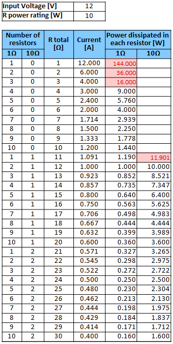
It was even worse for 24V, where the 10Ω resistor has to dissipate 48W:
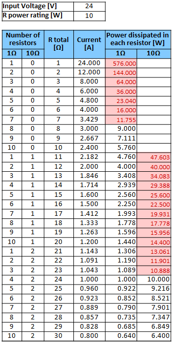
The efficiency graph had to jump from 1A to 2.4A output current, missing about half the data for a 24V 3A regulator.
However, when you add a second 10Ω resistor you double the power rating and halve the current, so each only dissipated 12W. Only the
first 10Ω resistor has to be beefy.
With all that in mind, let's try again.
Project Goals
- Draw up to 3A from a 24V rail without blowing any of the resistors or skipping any resistor combinations.
- Be precise. I'd like to use 1% resistors if they're not too expensive.
- Be easy to manufacture. One factor will be avoiding wires and cables since those are a big time sink to assemble.
- Take up less space. The first version was mounted on two A4 sized pieces of acrylic.
- Be easy to store. I'd like to be able to stack other thing on top when not in use.
Resistor Power Ratings
Here are the required resistor power ratings for up to 3A at 24V, taken from the previous table with an added safety factor.
| Resistor | Max P @ 24V [W] | Derate 25% [W] |
|---|---|---|
| 1Ω | 9 | 12 |
| 10Ω #1 | 47.6 | 60 |
| 10Ω #2-10 | ≤13.1 | 17 |
Sourcing Parts
Resistors
There's three main ways to mount a resistor: surface mount, through hole, and chassis mount. Chassis mount is out because it
requires wiring, and through hole power resistors are dominated by TO-220 package variants that
either want heat sinks which take up room or need to have
their legs bent so you can bolt them flat against the bare copper of the PCB with thermal paste. Both those options are labour
intensive, so I'll be sticking with surface mount parts.
For the 1Ω resistors, there were only two options after filtering for everything: a chip type (PFC10) and a DPAK. I chose the
DPAK even though it was slightly more expensive because it will be easier to confirm it's soldered correctly. The same thing
happened with the low power 10Ω resistors.
There's more options for the high power 10Ω resistor since I don't mind some extra assembly time for this single resistor.
It's also dissipating the most heat by far of any resistor so the heat sinking strategy should be more robust. Ideally it will
be bolted directly to the wall of the enclosure. After looking at a lot of enclosures and making a rough PCB layout to estimate
the needed area, I chose two 5Ω chassis mount resistors in series, those golden ones with two tabs for bolts. I'll bolt it to
the bottom of the metal enclosure with some thermal paste, which should hopefully be enough to keep them cool.
Jacks
I used banana jacks in the first version and they worked really well. Banana cables are cheap, make a relatively low impedance connection, and have a high enough ampacity. Cheap and robust jacks are available, and I already had some from a previous order. You can also plug a banana cable directly into a multimeter, which is really convenient for the current measurements I'll be making.
Enclosure
I originally wanted to use an enclosure similar to my
Audio IO Switch. It
lets me use a PCB for the faceplate, so I don't have to do any machining, and having the UI
forward facing is nice for lab equipment. However, I spent a few hours looking through Digi-Key and I couldn't find one with a
faceplate that was wide enough to fit the banana jacks without being needlessly tall. They're also generally plastic, which isn't
as good as metal for heat dissipation.
I considered just having the device open to the air with a small faceplate holding the banana jacks:
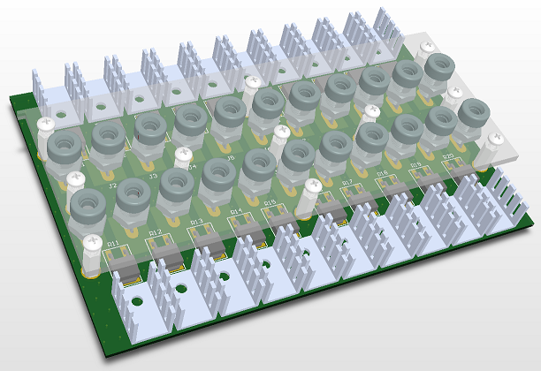
However I rejected this idea because it would get really dusty and not be easy to store. The heat sinks would scratch
anything that rested on them. It also didn't seem like a finished product.
I found a more standard metal box-with-lid type enclosure that isn't too much larger than I need it to be. However, since it's metal
and I don't want to hand file 22 holes for the banana jacks, I'll have to find a CNC mill somewhere.
Design
Schematic
Here's the (very simple) schematic. A higher quality version is available on Github.
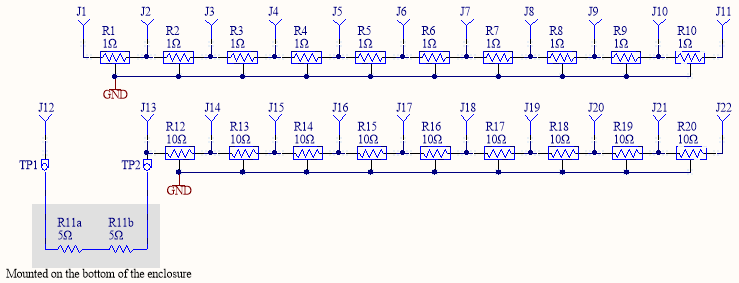Heatsinking
I ended up using short aluminum standoffs to hold the PCB to the lid, with one next to each resistor. Heat
should travel up the standoff and dissipate off the lid. I would have liked to make the standoffs shorter, but I had to choose ones
long enough to accommodate the banana jacks.
The high power resistors are bolted directly to the bottom of the enclosure, which is lifted off the desk by small plastic feet.
This should increase airflow around the enclosure, increasing heat dissipation.
Unfortunately, I don't have a really good way to simulate the thermal design. I'd like a program that I can just load some 3D models
into, assign material properties and heat sources, then run, but I haven't found a program that works well and isn't expensive.
I'll have to default to trying to over design it and then testing the result.
PCB
The PCB design focuses on reducing resistance between the resistors and then trying to increase thermal dissipation. I could have removed
the thermals from the resistors and added heat transfer vias under them, but I wanted at least a chance of hand soldering.
I made the banana jack tabs horizontal in order to make the copper areas smaller.
The via stitching grid was set to a multiple of the resistor spacing so the vias between them would be uniform.
Mechanical
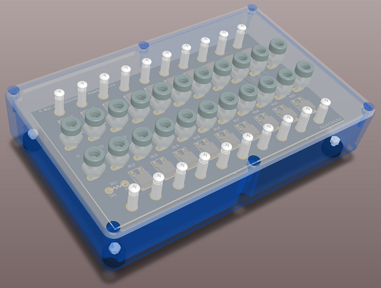 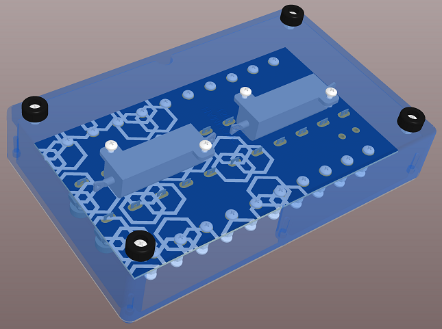 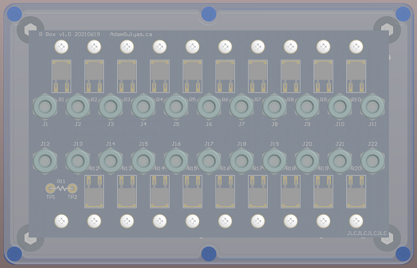 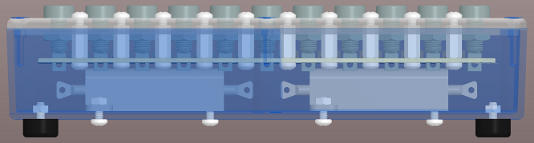 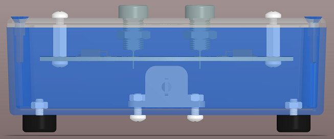Faceplate
I put the project name and website at the bottom so it would be less intrusive, but also be visible if the edge is peaking out from under a pile of stuff. There's no colour because I only have a laser printer. The border has a black line so that, even if you cut it out a bit crooked there will still be a crisp border. Also, a crooked edge should show up less against the black box.
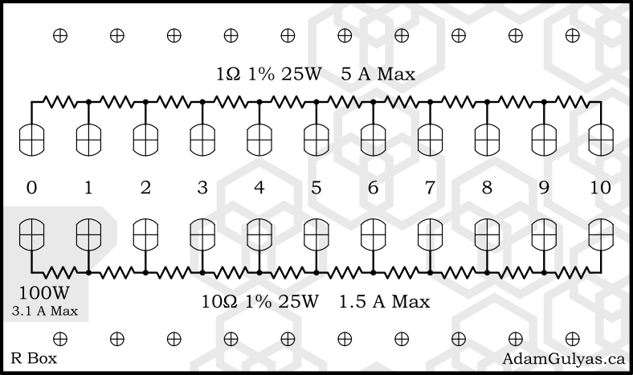 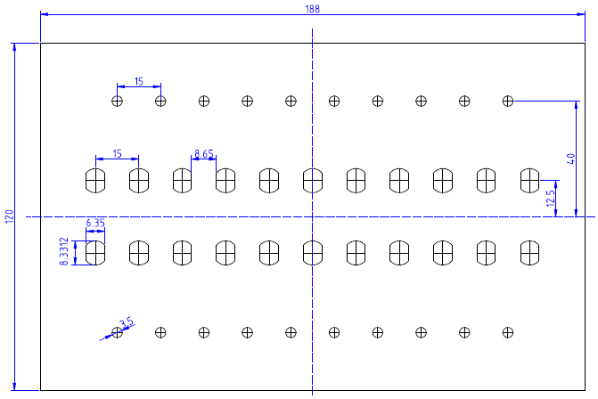Assembly
Forthcoming when parts arrive.
Qualification
The below graph shows 4 point resistance measurements for each resistor combination plotted against an ideal curve.
(add data here)
The below table shows the internal temperature rise at different operating conditions. The system was left at steady state for one hour in each case (or longer if it seems necessary). Since higher temperatures increase resistances, I also calculated the effective resistance after an hour.
| Resistance | Voltage | Current | Internal Temperature | Heated Resistance |
|---|---|---|---|---|
| 3Ω | 24V | (measure) | ?? °C | (calculate) |
| 4Ω | 24V | (measure) | ?? °C | (calculate) |
| 10Ω | 24V | (measure) | ?? °C | (calculate) |
| 11Ω | 24V | (measure) | ?? °C | (calculate) |
| 110Ω | 24V | (measure) | ?? °C | (calculate) |
| (and others) |
BOM
| Part | Manufacturer | Part Number | Digi-Key Part Number | Quantity | Price/unit (CAD) |
|---|---|---|---|---|---|
| 1Ω Resistor | Bourns Inc. | PWR163S-25-1R00FE | 118-PWR163S-25-1R00FECT-ND | 10 | $4.69 |
| 10Ω Low Power Resistor | Bourns Inc. | PWR163S-25-10R0F | PWR163S-25-10R0F-ND | 9 | $3.66 |
| 10Ω High Power Resistor | Stackpole Electronics Inc | KAL50FB5R00 | KAL50FB5R00-ND | 2 | $4.84 |
| Banana Jack | Cinch Connectivity Solutions Johnson | 108-0904-001 | J153-ND | 22 | $1.10 |
| Standoff | Keystone Electronics | 24434 | 36-24434-ND | 20 | $0.56 |
| Feet | Keystone Electronics | 720 | 36-720-ND | 4 | $0.44 |
| Enclosure | Hammond Manufacturing | 1590DD | HM347-ND | 1 | $25.11 |
| PCB | JLCPCB | - | - | 1 | $8.97 |